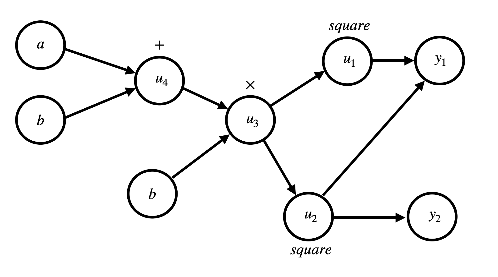

Backpropagation
Lucas Sas Brunschier
SS20
Intro
Präsentation ist auch online sirbubbls.github.io/backpropagation-seminar
Präsentation ist in Org-Mode geschrieben, also sourcen aller Grafiken und Beispiele sind integriert.
Zusätzliche Ressourcen
Deep Learning (Ian Goodfellow, Yoshua Bengio & Aaron Courville)

Jupyter Notebook
Beispiele für alle Methoden dieser Präsentation sind in diesem IPython Notebook zu finden.
Agenda
- Vorwissen
- Gradients & Stochastic Gradient Descent
- Computational Graphs
- Neuronale Netze
- Forward Propagation
- Back-propagation
- Kettenregel
- Back-propagation
- Delta Rule
- Implementation in Python
- General Back-propagation
Vorwissen
Gradient
Der Gradient ist der Vektor aller partiellen Ableitungen einer Funktion \(f\).
Notation: \(\nabla_xf(x)\)
Beispiel
\(f(x) = 2x_1^2 + x_2^3\)
\(\rightarrow \nabla_xf(x)=\left(\begin{array}{c} f'_{x_1} \\ f'_{x_2} \end{array}\right)= \left(\begin{array}{c} 4x_1 \\ 3x_2 \end{array}\right)\)
Stochastic Gradient Descent
Der Gradient Descent Algorithmus wird dafür verwendet ein lokales Minimum einer Funktion zu bestimmen.
Beispiel
Funktion \(f(x)=x_1^2-x_2^2\) ist gegeben.
Also: \(\nabla_xf(x)=\left(\begin{array}{c} f'_{x_1} \\ f'_{x_2} \end{array}\right)= \left(\begin{array}{c} 2x_1 \\ -2x_2 \end{array}\right)\)
Wir starten mit einem beliebigen Punkt: z.B. \(\left(\begin{array}{c} 2 \\ 1 \end{array}\right)\) und setzen ein:
\(\left(\begin{array}{c} 2x_1 \\ -2x_2 \end{array}\right) = \left(\begin{array}{c} 2 * 2 \\ -2 * 1 \end{array}\right) = \left(\begin{array}{c} 4 \\ -2 \end{array}\right)\)
\(Neuer\ Punkt = \left(\begin{array}{c} 2 \\ 1 \end{array}\right)+ \lambda \left(\begin{array}{c} 4 \\ -2 \end{array}\right)\) mit \(\lambda: learning\ rate\)
Computational Graphs
Typischerweise werden Operationen in artificial neural networks nicht mit mathematischen Formeln angegeben, sondern als Graph dargestellt.
Repräsentation
Jede Node in einem Graph \(G\) repräsentiert eine mathematische Operation oder eine Input Variable.
Beispielsweise:
- Matrix Multiplikation
- Addition
- Skalare Multiplikation
Addition Beispiel
\[ y = a+b \]

Komplexere Beispiele
\(x=y+z\)
\(a=x\odot z\)

Künstliche Neuronale Netze & Deep Learning
Künstliche Neuronale Netze
Als Vorbild dienen Neuronale Netze in der Biologie, jedoch versuchen ANN’s .
In diesem Vortrag werden nur fully connected feed forward networks behandelt.
Formale Definition
Formale Definition für ein neuronales Netz: \(y=f(x; \theta)\) und \(y=f^*(x)\)
- \(y\) ist den Wert den unser NN vorraussagen soll
- \(x\) sind die Input Daten, die das NN erhält
- \(\theta\) sind Parameter des NN’s, um \(f\) so nah wie möglich an die optimale Funktion \(f^*\) anzunähern.
Wie ist nun ein neurales Netzwerk aufgebaut?
Wir teilen das Netzwerk in Schichten (Layer) auf.

Jeder Layer bildet eine Funktion \(f^{i}\), mit \(i=Layer\ Index\) ab.
Formell
Somit ist ein neurales Netzwerk eine Kette an Funktionen \(f\).
Ein Netz mit \(3\) Layern wäre somit \(f^2(f^1(f^0(X)))\) mit \(X=Input\ Data\)
Aufbau eines Layers
Jeder Layer enthält mindestens folgende Informationen:
- Eine Weight Matrix (\(w\))
- Einen Bias Vektor (\(b\))
- Aktivierungsfunktion (\(\sigma\))
Aktivierungsfunktion
Da wir bei Neural Networks oft versuchen non-lineare Zusammenhänge zu aproximieren, benötigen wir auch eine nicht-lineare Komponente in unserem NN.
Beliebte Aktivierungsfunktionen
- Rectified Linear Unit (\(ReLU\))
- \(Leaky\ ReLU\)
- Sigmoid Function
Cost Function (\(J\))
Eine Funktion um zu bestimmen wie ’nah’ wir uns an unserem erwarteten Inference Wert befinden.
In dieser Präsentation benutzen wir die Euklidean-Distance \((x-y)^2\) als Cost Function.
Forward Propagation
Ein Layer in einem Feed-Forward Neural Network besteht aus folgenden Elementen:
- Inputs (\(X\))
- Weights (\(W\))
- Biases (\(b\))
- Output (\(a\))
Formell
Um die Aktivierungen (\(a\)) eines Layers zu berechen können wir folgende Formel benutzen:
\(a_L = \sigma(a_{L-1} w_L + b_L)\)
Der berechnete Vektor \(a_L\) dient dem Layer \(L+1\) als Input.
Computational Graph
\[ a = \sigma(a_{L-1}w_L+b) \]

Beispiel (XOR)
\(W=\left[\begin{array}{ccc} 1 & 1 \\ 1 & 1 \end{array}\right]\)
\(b=\left [\begin{array}{ccc} 0 \\ -1 \end{array} \right]\)
Multiplizieren der Weights (\(W\)) und Inputs (\(X\))
\[ XW=\left[\begin{array}{ccc} 0 & 0 \\ 0 & 1 \\ 1 & 0 \\ 1 & 1 \end{array} \right] \left[\begin{array}{ccc} 1 & 1 \\ 1 & 1 \end{array}\right]= \left[\begin{array}{ccc} 0 & 0 \\ 1 & 1 \\ 1 & 1 \\ 2 & 2 \end{array} \right] \]
Addieren des Bias Vektors (\(b\))
\[ XW + b= \left[\begin{array}{ccc} 0 & 0 \\ 1 & 1 \\ 1 & 1 \\ 2 & 2 \end{array} \right] + \left(\begin{array}{ccc} 0 \\ -1 \end{array}\right)= \left[\begin{array}{ccc} 0 & -1 \\ 1 & 0 \\ 1 & 0 \\ 2 & 1 \end{array} \right] \]
Aktivierungsfunktion (in diesem Fall \(ReLU\))
\(ReLU:= f(x)=max(0, x)\)
\[ relu(XW+b)= relu(\left[\begin{array}{ccc} 0 & -1 \\ 1 & 0 \\ 1 & 0 \\ 2 & 1 \end{array} \right])= \left[\begin{array}{ccc} 0 & 0 \\ 1 & 0 \\ 1 & 0 \\ 2 & 1 \end{array} \right] \]
Die Aktivierungsfunktion wird auf jedes Element der Matrix ausgeführt.
Output Layer
Multiplizieren der Output Matrix des ersten Layers mit den Weights des Output Layers (\(w\)). \[ w= relu(XW+b)* \left[\begin{array}{ccc} 1 \\ -2 \end{array}\right]= \left[\begin{array}{ccc} 0 & 0 \\ 1 & 0 \\ 1 & 0 \\ 2 & 1 \end{array} \right]* \left[\begin{array}{ccc} 1 \\ -2 \end{array}\right]= \left[\begin{array}{ccc} 0 \\ 1 \\ 1 \\ 0 \end{array}\right] \]
Predictions & Input
Input: \(\left[\begin{array}{ccc} 0 & 0 \\ 0 & 1 \\ 1 & 0 \\ 1 & 1 \end{array} \right]\)
Predictions: \(\left[\begin{array}{ccc} 0 \\ 1 \\ 1 \\ 0 \end{array}\right]\)
Code Beispiel
def forward(X): a = X for layer in L: a = h @ layer.weights + layer.bias return a
Backpropagation
Wozu brauchen wir den Back-propagation Algorithmus?
Ein fundamentaler Baustein, von neuralen Netzen.
Back-propagation ist kein Lernalgorithmus/Optimierungsalgorithmus, sondern aussschlißlich für die Generierung der Gradients jedes Layers zuständig.
Also suchen wir folgende Gradients:
- \(\nabla_{b^k} J\)
- \(\nabla_{w^k} J\)
Kettenregel
Die Kettenregel ist nützlich um Ableitungen aus schon bereits vorhandenen Ableitungen zu konstruieren.
\[y=g(x)\ und\ z=f(g(x))=f(y)\]
Dann besagt die Kettenregel: \(\frac{dz}{dx} = \frac{dz}{dy} \frac{dy}{dx}\)
Kettenregel als Graph
\[ x = f(w),\ y=f(x),\ z=f(y) \]

\[ \frac{\partial z}{\partial w}= \frac{\partial z}{\partial y} \frac{\partial y}{\partial x} \frac{\partial x}{\partial w} = f'(y)f'(x)f'(w) \\ = f'(f(f(w)))f'(f(w))f'(w) \]
Anpassung der Forward Propagation
Wir benötigen folgende Werte aus jedem Layer um den Back-propagation Algorithmus ausführen zu können.
- \(a\) Aktivation Vektor
- \(z\) Pre Activation Function Vektor
\(f'(y)f'(x)f'(w)\): Speichern der Zwischenergebnisse in Variablen \(f'(f(f(w)))f'(f(w))f'(w)\): Neu Evaluierung der Zwischenergebnisse
Beschreibung des Algorithmus
Schritt 1
Forward Propagation ausführen.
Schritt 2
Wir berechnen den Gradienten der Cost Function \(J\). \(J = \frac{1}{2} (y-X)^2 \rightarrow \nabla_y J = X - y\)
Schritt 3
Erst müssen wir den Gradienten in Relation zu den pre activation function values berechnen.
\(\nabla_{a^{k}} J = g \odot f'(a^{(k)})\)
mit \(f'(x) := Ableitung\ der\ Aktivierungsfunktioin\)
Schritt 4
Bias Gradienten berechnen.
\(\nabla_{b^{k}} J = g\)
Weight Gradienten berechnen.
\(\nabla_{w^k} J = ga^{k-1}\)
Schritt 5
\(\nabla a^{k-1} J = w^kg\)
Wiederholen von Schritt 3 - 5 des nächsten Layers (\(L{-1}\))
Graph

Delta Rule
In neural Networks kann der Back-propagation Algorithmus zu der sog. Delta Rule zusammengefasst werden.
\[ \nabla w_{ji} = \lambda ( - a) \alpha'(z)a_{L-1} \]
Praktisches Beispiel in Python
Anmerkungen
In der Praxis werden keine Vektoren als Input Daten benutzt, sondern Matrizen (siehe XOR Beispiel).
\[
Input = \left[\begin{array}{ccc} 0 & 0 \\ 0 & 1 \\ 1 & 0 \\ 1 & 1 \end{array} \right]
\]
Wir erhalten nun auch mehrere Gradienten in Form einer Matrix. Wir können nun den Durchschnitt der Gradienten nutzen um unsere Weights anzupassen.
General Back-propagation nach Ian Goodfellow
Bisher haben wir uns nur mit Back-propagation in Zusammenhang mit neuralen Netzwerken beschäftigt.
Back-propagation kann aber auch generell für andere Anwendungen eingesetzt werden.
Operationen
Wir betrachten einen computational Graph, jede Node in dem Graph repräsentiert eine Variable in Form eines Tensors.
Funktionen
get_operation()get_consumers()
Gibt alle Variablen/Operationen zurück, die ’Kinder’ von sich selber sind.get_inputs()
Gibt alle Variablen/Operationen zurück, die ’Eltern’ von sich selber sind.bprop()
Muss bei jeder Operation implementiert werden.
Algorithmus
Benötigt ist:
- die Menge aller Variablen \(T\), deren Gradienten wir berechnen müssen
- den Graphen \(G\)
- die Variable \(z\), die wir differenzieren wollen
Äussere Funktion
Wir definieren \(G'\) als alle Variablen, die Vorfahren von \(z\) sind oder Nachfahren von \(T\).
In grad_table können wir Variablen Gradients zuweisen.
grad_table[z] = 1 (da \(\frac{\partial z}{\partial z} = 1\))
Loop über alle Variablen, deren Gradienten wir berechnen müssen
In jedem Loop rufen wir die Funktion build_grad auf.
for v in T: build_grad(v, G, G_1, grad_table) return [grad_table[v] for v in T]
build_grad(v, G, G_1, grad_table)
def build_grad(v, G, G_1, grad_table): if v in grad_table: return grad_table[v] i = 1 for c in get_consumers(V, G_1): op = get_operation(c) d = build_grad(c, G, G_1, grad_table) g[i] = op.bprop(get_inputs(c, G_1), v, d) i += 1 g = sum(g) grad_table[v] = g return g
bprop Funktion
op.bprop(inputs, X, G)
inputs: Liste an Inputs, die wir der Operation zur Verfügung stellen
X: Input, dessen Ableitung wir berechnen wollen
G: Gradient des Outputs der Operation
Beispiel
Graph

Bestimmen der Ableitung \(\frac{\partial u_1}{\partial u_4}\)

Generalisierbarkeit
Dadurch ist der Back-propagation Algorithmus sehr allgemein anwendbar.
Jede Operation ist für seine eigene Differenzierung verantwortlich und benötigt keine weiteren Informationen.
Symbol to Number / Symbol to Symbol
Es existieren zwei verschiedene Möglichkeiten die Berechnungen der Gradients durchzuführen.
- Symbol to Number
- Symbol to Symbol
Symbol to Number
Die Input Variablen werden durch Zahlenwerte ersetzt und daraufhin (wie besprochen) alle nötigen Gradienten berechnet.
Symbol to Symbol
Beim der Symbol to Symbol Herangehensweise wird zuerst der Graph mit allen Ableitungen mit der Hilfe von symbolischen Werten konstruiert.
Später wird dann der Graph mit der Hilfe eines eigenen Algorithmus ausgewertet.
Vorteil
Ableitungen eines höheren Grads können berechnet werden, indem man den Back-propagation Algorithmus auf einen bereits abgeleiteten Graphen ausführt.
Historisches
- Kettenregel stammt aus dem 17ten Jahrhundert (Leibniz, 1676).
- Lineare neurale Netzwerke Mitte des 20ten Jahrhunderts.
- Erfolgreiche Experimente mit Back-Propagation (1986)
Quellen
- Deep Learning (Ian Goodfellow, Yoshua Bengio & Aaron Courville)
- https://medium.com/@14prakash/back-propagation-is-very-simple-who-made-it-complicated-97b794c97e5c
- Wikipedia: https://en.wikipedia.org/wiki/Backpropagation
- Wikipedia: https://en.wikipedia.org/wiki/Delta_rule